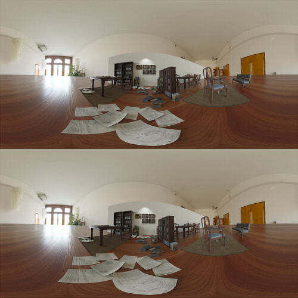
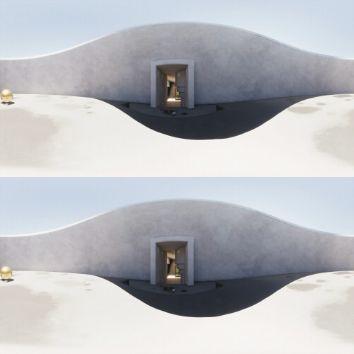

Panorama180 Renderの360度パノラマのテスト
2021/05/23 Update.
WebGLの360度パノラマ＋ステレオビュワーとして「
https://github.com/wakufactory/vr360
」を使用しています。
読み込みに失敗する場合は、ページを再読み込みするようにしてくださいませ。
Intel OSPRay
2021/05/23 Update.
クリックするとVR表示します。
Rendering
Intel OSPRay (v.2.3.0)
Resolution
4096 x 4096 pixel
Panorama
Panorama 360
IPD
64mm

上下を向いた場合、地面の視差がなくなって凹んだように見えています。
オフラインレンダラが出力する多くの360度パノラマ+ステレオは、このような表現が多いです。
Panorama180 Render in Unity 2020.3 HDRP
2021/05/23 Update.
Panorama180 Renderの次バージョン（360度パノラマ対応したもの）で出力しています。
クリックするとVR表示します。
Rendering
Unity 2020.3 (HDRP)
Panorama180 Renderで出力
Resolution
4096 x 4096 pixel
Panorama
Panorama 360
IPD
64mm

極力、地面や空の視差による距離感を保つようにしています。
境界部分が荒くなる（矛盾）とのトレードオフですが、接地感はこのほうが出るかなと思います。